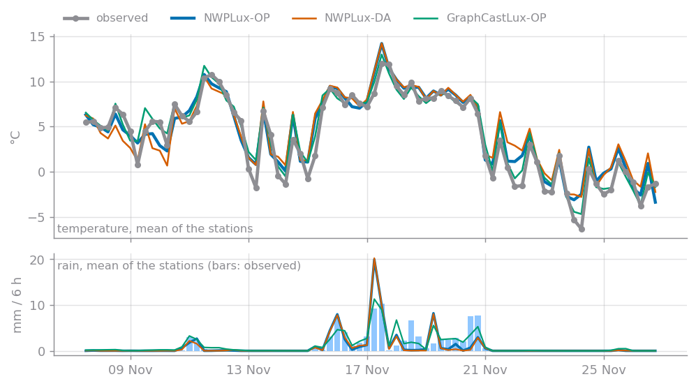
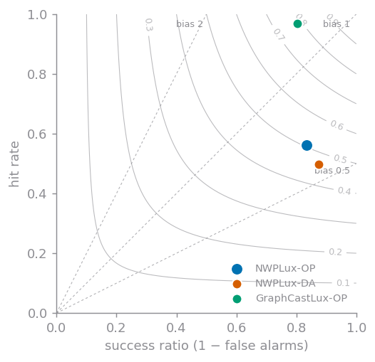

07 Nov – 26 Nov 2026 · next-day forecasts (12–36 h ahead) against measurements · all three systems on the same 80 forecast runs, times and stations
| Temperature error °C | bias °C | correlation | Wind airport error km/h | correlation | Rain ≥ 1 mm/6 h ETS | |
|---|---|---|---|---|---|---|
| NWPLux-OP | 1.4 | 0.6 | 0.92 | 3.7 | 0.87 | 0.42 |
| NWPLux-DA | 1.6 | 0.7 | 0.90 | 3.5 | 0.88 | 0.39 |
| GraphCastLux-OP | 1.1 | 0.5 | 0.95 | 4.8 | 0.88 | 0.72 |
Error: mean absolute difference from the measurement (lower is better). Bias: on average too warm (+) or too cold (−). Correlation: 1 = forecast follows every rise and fall. ETS (equitable threat score): 0 = no better than chance, 1 = every rainy and dry 6 h period right. Temperature and rain at 39 AgriMeteo stations (14,835 values, 3565 rainy periods); wind at Luxembourg airport (390 values), because the AgriMeteo wind sensors are low and sheltered.


Each dot is one system. Up = more of the rainy periods were forecast (hit rate). Right = fewer forecast rainy periods stayed dry (success ratio). Top right corner is perfect; the curves are the critical success index, the dashed lines the frequency bias (1 = rain forecast as often as it happened).
Same rules for all: model temperature moved to the station height (6.5 °C per km); stations with faulty sensors are left out. Updated daily, last 30 days. Built 27 Nov 2026 11:51 UTC.